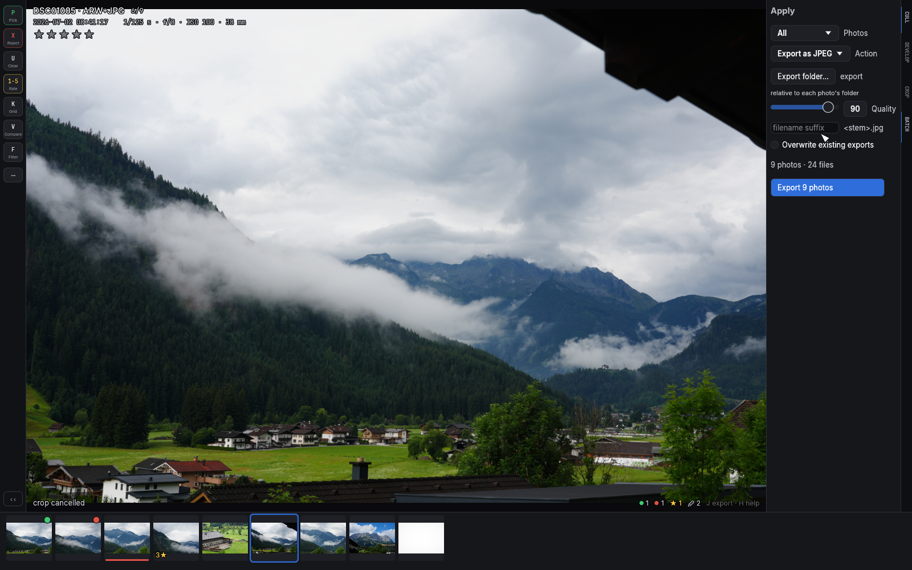
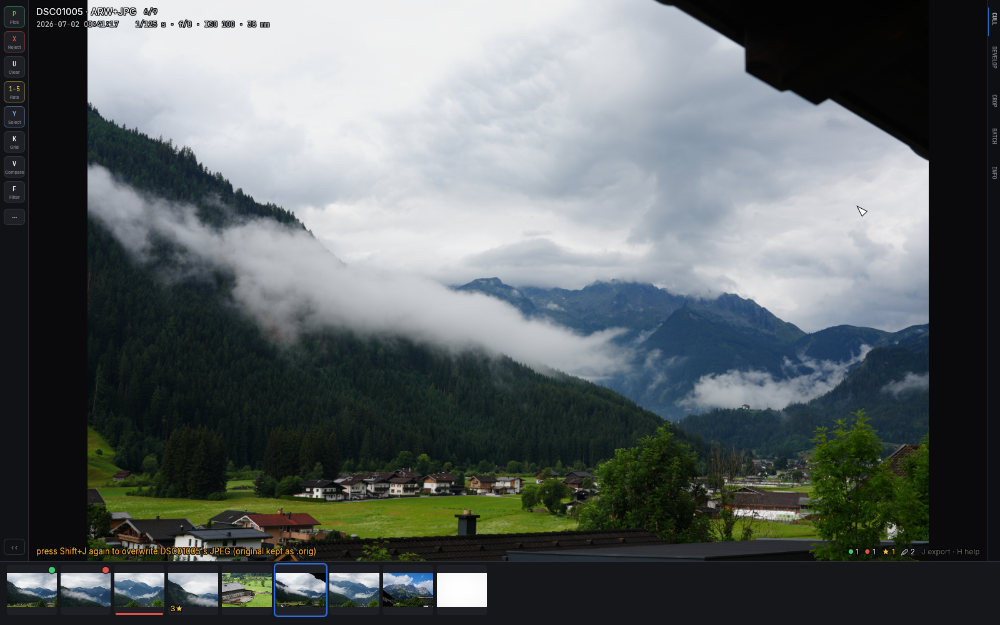

Batch operations and export
The apply panel: A
A opens the apply panel: pick a scope (Rejects, Picks, Unrated,
All but rejects — the survivors of a cull, everything you didn't
throw out — or All), an action, and run it. Every action treats
RAW + JPEG + sidecar as one unit — a moved photo takes its ratings
with it.

The actions adapt to the active source:
- Local folders: Copy to folder, Move to folder, Delete to trash (arm/confirm — the button asks for a second click), Export as JPEG, and Upload to Immich when a server is configured.
- Immich sources: Download to folder (each photo lands with a sidecar carrying your edits), Archive on server, and Delete to trash on the server (same two-click confirm).
Upload to Immich sends RAW+JPEG pairs (stacked on the server with the JPEG as the stack cover, sidecar included so ratings import) and offers two destinations: a Server — with one Immich server configured it's pre-selected and inert; with several, the upload waits until you pick one (there is deliberately no silent default, and the completion summary names the server it went to) — and an Album. The album default, No album (timeline only), is plain upload; choosing an album adds every uploaded file to it, and the summary names it. Album choices are per-server: switching the Server resets the Album. If the album list can't be fetched, the panel says so (with a Retry button) instead of loading forever, and uploading to the timeline keeps working regardless.
If the photos upload fine but the pair can't be stacked or the album
add fails, that's reported as a warning on an uploaded photo, never
as a failed upload. The common cause for the stack case is an API key
minted before stacking shipped — add the stack.create permission to
the key (or mint a fresh one) and re-run the upload: the server
recognizes the duplicates and only the stacks are created.
While a batch runs the panel shows a live "Uploading N of M" count with a progress bar, and a Cancel button: cancel finishes the photo in flight, then stops — no half-uploaded pair — and the summary says what happened ("Cancelled — 12 of 37 uploaded"). A cancelled upload is safe to re-run; the server answers the already-sent photos as duplicates without storing anything twice. (Archive and server-trash are single server calls — nothing to count or cancel, they just show a spinner.)
Uploading copies: your local files stay. A "move" variant (trash locals after upload) is deliberately not offered yet — it would delete your only local copy based on a server response that some Immich versions get wrong for duplicates, so it waits until that success signal can be verified.
Single export: J — and overwrite: Shift+J
J renders the current photo's edits (tone + crop) at full resolution
through the same GPU pipeline that draws the screen — the file is
pixel-identical to what you see — and writes a JPEG using the export
preset (folder, filename suffix, quality, overwrite policy). For a
photo with a RAW file, the export comes from a fresh full-resolution
demosaic of the RAW (color, lens correction and your white balance
included), exactly like the develop panel
shows it; photos without a RAW export from the JPEG as before. Edit the
preset in the apply panel under Export as JPEG; it persists between
runs. Exports keep the camera's EXIF (MakerNotes intact), with
orientation and pixel dimensions corrected for your crop.
Shift+J replaces the paired camera JPEG in place with the rendered
edit — the one destructive file operation in the app. It asks for a
second press and keeps the original as <name>.JPG.orig. What happens
to your settings afterwards depends on what they were grading: a photo
developed on its JPEG has its develop and crop reset — those edits
are baked into the very pixels the sliders acted on, and left up they
would apply twice. A RAW-paired photo keeps its develop sliders:
they grade the RAW, which the overwrite never touches, so reopening the
develop panel shows the exact grade that produced the new JPEG. The
crop resets in both cases — the new JPEG is already cropped.

Edit uploads on a server source
On an Immich source, J downloads the original, renders your edit
locally and uploads it — a RAW original gets the same full demosaic
treatment as a local one.
The edit is always stacked with its original: a photo that wasn't in
a stack founds a new one (edit on top, original behind it), and inside
an existing stack the edit becomes the new
stack cover — either way the server timeline shows your version
fronting the original. The edit carries the original's metadata: camera,
lens, exposure, GPS and the local capture time ride along even when the
original is a format culler can't decode itself (an iPhone HEIC, say),
so the server's Info panel reads the same on both. From an
album view, the edit also joins that album. Only
one export/upload runs at a time — a second J tells you one is already
running and points at the pill.
The pending-work pill
Anything running in the background shows in a small pill at the top-right: a batch with its live count ("Uploading · 12 of 37") right in the collapsed label, syncing ratings, a scan with its running total, an export by name, a stack loading, previews downloading. Hover it for the full list — and while a cancellable batch runs, its row in that list carries a ✕ that stops the batch after the current photo (the same cancel as the batch panel's button, for when the panel is closed). The pill exists to explain two things: why the app might feel slow right now (the wait is on the wire, not in the app), and why an action was just refused — a blocked keypress flashes the pill to point at the operation in its way. A failing sync shows here too, in amber, with the server's error; it keeps retrying on its own. When nothing is pending, the pill doesn't exist.